Lecciones de circuitos eléctricos - Volumen I
Capítulo 3
SEGURIDAD ELÉCTRICA
- The importance of electrical safety
- Physiological effects of electricity
- Shock current path
- Ohm's Law (again!)
- Safe practices
- Emergency response
- Common sources of hazard
- Safe circuit design
- Safe meter usage
- Electric shock data
- Contributors
- Bibliography
The importance of electrical safety
Con esta lección, espero evitar un error común que se encuentra en los libros de texto de electrónica de ignorar o no cubrir con suficiente detalle el tema de la seguridad eléctrica. Supongo que quien lea este libro tendrá al menos un interés pasajero en trabajar con electricidad y, como tal, el tema de la seguridad es de suma importancia. Aquellos autores, editores y editoriales que no incorporan este tema en sus textos introductorios están privando al lector de información que puede salvarle la vida.
Como instructor de electrónica industrial, paso una semana completa con mis alumnos repasando los aspectos teóricos y prácticos de la seguridad eléctrica. Los mismos libros de texto que encontré carentes de claridad técnica también carecían de cobertura de seguridad eléctrica, de ahí la creación de este capítulo. Su ubicación después de los dos primeros capítulos es intencional: para que los conceptos de seguridad eléctrica tengan el mayor sentido, es necesario tener algunos conocimientos básicos de electricidad.
Otro beneficio de incluir una lección detallada sobre seguridad eléctrica es el contexto práctico que establece para los conceptos básicos de voltaje, corriente, resistencia y diseño de circuitos. Cuanto más relevante pueda ser un tema técnico, más probabilidades habrá de que el estudiante preste atención y lo comprenda. ¿Y qué podría ser más relevante que aplicarlo a su propia seguridad personal? Además, dado que la energía eléctrica es una presencia tan cotidiana en la vida moderna, casi cualquiera puede identificarse con las ilustraciones que se dan en dicha lección. ¿Alguna vez te has preguntado por qué los pájaros no reciben descargas eléctricas mientras descansan sobre cables eléctricos? ¡Sigue leyendo y descúbrelo!
Physiological effects of electricity
La mayoría de nosotros hemos experimentado algún tipo de "descarga" eléctrica, en la que la electricidad provoca que nuestro cuerpo experimente dolor o trauma. Si tenemos suerte, el alcance de esa experiencia se limita a hormigueos o sacudidas de dolor debido a la acumulación de electricidad estática que se descarga a través de nuestro cuerpo. Cuando trabajamos con circuitos eléctricos capaces de suministrar alta potencia a cargas, la descarga eléctrica se convierte en un problema mucho más grave y el dolor es el resultado menos significativo de la descarga.
A medida que la corriente eléctrica se conduce a través de un material, cualquier oposición a ese flujo de electrones (resistencia) resulta en una disipación de energía, generalmente en forma de calor. Éste es el efecto más básico y fácil de entender de la electricidad sobre el tejido vivo: la corriente hace que se caliente. Si la cantidad de calor generada es suficiente, el tejido puede quemarse. El efecto es fisiológicamente el mismo que el daño causado por una llama abierta u otra fuente de calor de alta temperatura, excepto que la electricidad tiene la capacidad de quemar tejido muy debajo de la piel de una víctima, incluso quemando órganos internos.
Otro efecto de la corriente eléctrica en el cuerpo, quizás el más significativo en términos de peligro, se refiere al sistema nervioso. Por "sistema nervioso" me refiero a la red de células especiales del cuerpo llamadas "células nerviosas" o "neuronas" que procesan y conducen multitud de señales responsables de la regulación de muchas funciones corporales. El cerebro, la médula espinal y los órganos sensoriales/motores del cuerpo funcionan juntos para permitirle sentir, moverse, responder, pensar y recordar.
Las células nerviosas se comunican entre sí actuando como "transductores": creando señales eléctricas (voltajes y corrientes muy pequeñas) en respuesta a la entrada de ciertos compuestos químicos llamadosneurotransmisoresy liberando neurotransmisores cuando son estimulados por señales eléctricas. Si se conduce una corriente eléctrica de magnitud suficiente a través de un ser vivo (humano o no), su efecto será anular los pequeños impulsos eléctricos normalmente generados por las neuronas, sobrecargando el sistema nervioso e impidiendo que tanto las señales reflejas como las volitivas puedan accionar los músculos. Los músculos activados por una corriente externa (descarga) se contraerán involuntariamente y la víctima no podrá hacer nada al respecto.
Este problema es especialmente peligroso si la víctima entra en contacto con un conductor energizado con sus manos. Los músculos del antebrazo responsables de doblar los dedos tienden a estar mejor desarrollados que los músculos responsables de extender los dedos, por lo que si ambos conjuntos de músculos intentan contraerse debido a una corriente eléctrica conducida a través del brazo de la persona, los músculos "dobladores" ganarán, apretando los dedos en un puño. Si el conductor que suministra corriente a la víctima mira hacia la palma de su mano, esta acción de apretar obligará a la mano a agarrar el cable con firmeza, empeorando así la situación al asegurar un contacto excelente con el cable. La víctima será completamente incapaz de soltar el cable.
Médicamente, esta condición de contracción muscular involuntaria se llamatétanos. Los electricistas familiarizados con este efecto de la descarga eléctrica a menudo se refieren a una víctima inmovilizada de una descarga eléctrica como si estuviera "congelada en el circuito". El tétanos inducido por un shock sólo puede interrumpirse deteniendo la corriente a través de la víctima.
Incluso cuando se detiene la corriente, es posible que la víctima no recupere el control voluntario sobre sus músculos por un tiempo, ya que la química de los neurotransmisores se ha desorganizado. Este principio se ha aplicado en dispositivos de "pistola paralizante" como las Tasers, que se basan en el principio de aplicar una descarga momentánea a la víctima con un pulso de alto voltaje entregado entre dos electrodos. Una descarga bien aplicada tiene el efecto de inmovilizar temporalmente (unos minutos) a la víctima.
Sin embargo, la corriente eléctrica puede afectar a algo más que los músculos esqueléticos de una víctima de shock. El músculo del diafragma que controla los pulmones y el corazón, que es un músculo en sí mismo, también puede "congelarse" en un estado de tétanos mediante una corriente eléctrica. Incluso las corrientes demasiado bajas para inducir el tétanos a menudo son capaces de codificar las señales de las células nerviosas lo suficiente como para que el corazón no pueda latir adecuadamente, provocando que el corazón sufra una afección conocida comofibrilación. Un corazón fibrilante aletea en lugar de latir y es ineficaz para bombear sangre a órganos vitales del cuerpo. En cualquier caso, la muerte por asfixia y/o paro cardíaco seguramente será el resultado de una corriente eléctrica suficientemente fuerte a través del cuerpo. Irónicamente, el personal médico utiliza una fuerte descarga de corriente eléctrica aplicada a través del pecho de la víctima para "impulsar" un corazón fibrilante a un patrón de latido normal.
Este último detalle nos lleva a otro peligro de descarga eléctrica, éste peculiar de los sistemas públicos de energía. Aunque nuestro estudio inicial de los circuitos eléctricos se centrará casi exclusivamente en CC (corriente directa o electricidad que se mueve en una dirección continua en un circuito), los sistemas de energía modernos utilizan corriente alterna o CA. Las razones técnicas para esta preferencia de CA sobre CC en los sistemas de energía son irrelevantes para esta discusión, pero los riesgos especiales de cada tipo de energía eléctrica son muy importantes para el tema de la seguridad.
La forma en que la CA afecta al cuerpo depende en gran medida de la frecuencia. La CA de baja frecuencia (50 a 60 Hz) se utiliza en hogares de EE. UU. (60 Hz) y Europa (50 Hz); Puede ser más peligroso que la CA de alta frecuencia y es de 3 a 5 veces más peligrosa que la CC del mismo voltaje y amperaje. La CA de baja frecuencia produce una contracción muscular prolongada (tetania), que puede congelar la mano en la fuente de corriente, prolongando la exposición. Es más probable que la CC cause una única contracción convulsiva, que a menudo obliga a la víctima a alejarse de la fuente de corriente.[MMOM]
La naturaleza alterna de la CA tiene una mayor tendencia a poner las neuronas marcapasos del corazón en una condición de fibrilación, mientras que la CC tiende a hacer que el corazón se detenga. Una vez que se detiene la corriente de choque, un corazón "congelado" tiene más posibilidades de recuperar un patrón de latido normal que un corazón fibrilante. Por eso funciona el equipo de "desfibrilación" utilizado por los médicos de emergencia: la descarga de corriente suministrada por la unidad desfibriladora es CC, lo que detiene la fibrilación y le da al corazón la oportunidad de recuperarse.
En cualquier caso, las corrientes eléctricas lo suficientemente altas como para provocar una acción muscular involuntaria son peligrosas y deben evitarse a toda costa. En la siguiente sección, veremos cómo estas corrientes normalmente entran y salen del cuerpo y examinaremos las precauciones contra tales sucesos.
- REVISAR:
- La corriente eléctrica es capaz de producir quemaduras profundas y graves en el cuerpo debido a la disipación de energía a través de la resistencia eléctrica del cuerpo.
- TétanosEs la condición donde los músculos se contraen involuntariamente debido al paso de una corriente eléctrica externa a través del cuerpo. Cuando la contracción involuntaria de los músculos que controlan los dedos hace que la víctima no pueda soltar un conductor energizado, se dice que la víctima está "congelada en el circuito".
- El diafragma (pulmón) y los músculos del corazón se ven afectados de manera similar por la corriente eléctrica. Incluso corrientes demasiado pequeñas para inducir el tétanos pueden ser lo suficientemente fuertes como para interferir con las neuronas marcapasos del corazón, haciendo que el corazón aletee en lugar de latir con fuerza.
- Es más probable que la corriente continua (CC) cause tétanos muscular que la corriente alterna (CA), lo que hace que la CC tenga más probabilidades de "congelar" a una víctima en un escenario de shock. Sin embargo, es más probable que la CA provoque que el corazón de la víctima fibrile, lo cual es una condición más peligrosa para la víctima una vez que se ha detenido la corriente impactante.
Shock current path
Como ya hemos aprendido, la electricidad requiere un camino (circuito) completo para fluir continuamente. Por eso el choque recibido de la electricidad estática es sólo una sacudida momentánea: el flujo de electrones es necesariamente breve cuando las cargas estáticas se igualan entre dos objetos. Los shocks de duración autolimitada como este rara vez son peligrosos.
Sin dos puntos de contacto en el cuerpo para que la corriente entre y salga, respectivamente, no hay riesgo de descarga eléctrica. Por este motivo, las aves pueden descansar con seguridad sobre las líneas eléctricas de alto voltaje sin recibir descargas eléctricas: sólo entran en contacto con el circuito en un punto.
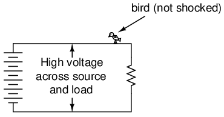
Para que los electrones fluyan a través de un conductor, debe haber un voltaje presente que los motive. El voltaje, como debes recordar, essiempre relativo entre dos puntos. No existe voltaje "encendido" o "en" un solo punto del circuito, por lo que al pájaro que hace contacto con un solo punto en el circuito anterior no se le aplica voltaje a través de su cuerpo para establecer una corriente a través de él. Sí, aunque descansantwopies, ambos pies tocan el mismo cable, haciéndoloseléctricamente común. Eléctricamente hablando, ambas patas del ave tocan el mismo punto, por lo tanto, no hay voltaje entre ellas para motivar la corriente a través del cuerpo del ave.
Esto podría hacer creer que es imposible recibir una descarga eléctrica con solo tocar un cable. Al igual que los pájaros, si estamos seguros de tocar sólo un cable a la vez, estaremos a salvo, ¿verdad? Lamentablemente, esto no es correcto. A diferencia de los pájaros, las personas suelen estar paradas en el suelo cuando entran en contacto con un cable "vivo". Muchas veces, un lado de un sistema de energía estará conectado intencionalmente a tierra, por lo que la persona que toca un solo cable en realidad está haciendo contacto entre dos puntos del circuito (el cable y la tierra):
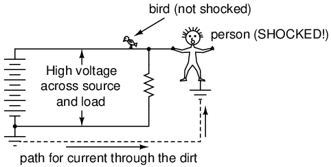
El símbolo del suelo es el conjunto de tres barras horizontales de ancho decreciente ubicadas en la parte inferior izquierda del circuito que se muestra, y también al pie de la persona que recibe la descarga. En la vida real, la tierra del sistema eléctrico consiste en algún tipo de conductor metálico enterrado profundamente en el suelo para hacer el máximo contacto con la tierra. Ese conductor está conectado eléctricamente a un punto de conexión apropiado en el circuito con un cable grueso. La conexión a tierra de la víctima se realiza a través de sus pies, que tocan el suelo.
En este punto suelen surgir algunas preguntas en la mente del alumno:
- Si la presencia de un punto de tierra en el circuito proporciona un punto de contacto fácil para que alguien reciba una descarga eléctrica, ¿por qué tenerlo en el circuito? ¿No sería más seguro un circuito sin tierra?
- La persona que recibe la descarga probablemente no esté descalza. Si el caucho y la tela son materiales aislantes, ¿por qué sus zapatos no los protegen impidiendo que se forme un circuito?
- ¿Qué tan bueno puede ser un director de orquesta?suciedad¿ser? Si la corriente que pasa por la Tierra puede provocar una descarga eléctrica, ¿por qué no utilizar la Tierra como conductor en nuestros circuitos de energía?
En respuesta a la primera pregunta, la presencia de un punto de "puesta a tierra" intencional en un circuito eléctrico tiene como objetivo garantizar que un lado del mismoisseguro entrar en contacto con él. Tenga en cuenta que si nuestra víctima en el diagrama anterior tocara el lado inferior de la resistencia, no pasaría nada aunque sus pies aún estuvieran en contacto con el suelo:
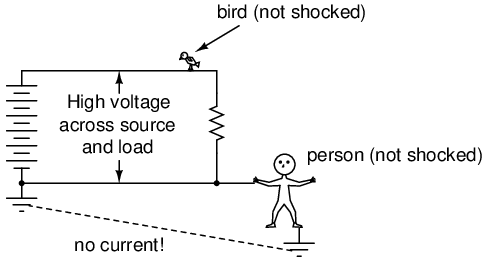
Debido a que el lado inferior del circuito está firmemente conectado a tierra a través del punto de conexión a tierra en la parte inferior izquierda del circuito, el conductor inferior del circuito está hechoeléctricamente comúncon toma de tierra. Dado que no puede haber voltaje entre puntos eléctricamente comunes, no se aplicará voltaje a través de la persona que haga contacto con el cable inferior y no recibirá una descarga. Por la misma razón, el cable que conecta el circuito a la varilla/placas de conexión a tierra generalmente se deja desnudo (sin aislamiento), de modo que cualquier objeto metálico que roce será igualmente eléctricamente común con la tierra.
La conexión a tierra del circuito garantiza que al menos un punto del circuito sea seguro de tocar. Pero ¿qué pasa con dejar un circuito completamente sin conexión a tierra? ¿No haría eso que cualquier persona que toque un solo cable sea tan segura como el pájaro posado en solo uno? Lo ideal es que sí. Prácticamente no. Observe lo que sucede sin ningún fundamento:
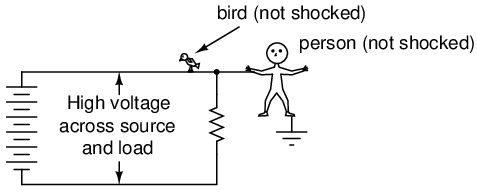
A pesar de que los pies de la persona todavía están en contacto con el suelo, cualquier punto del circuito debe ser seguro al tocarlo. Dado que no existe un camino (circuito) completo formado a través del cuerpo de la persona desde el lado inferior de la fuente de voltaje hasta la parte superior, no hay manera de que se establezca una corriente a través de la persona. Sin embargo, todo esto podría cambiar con una conexión a tierra accidental, como la rama de un árbol que toca una línea eléctrica y proporciona conexión a tierra:
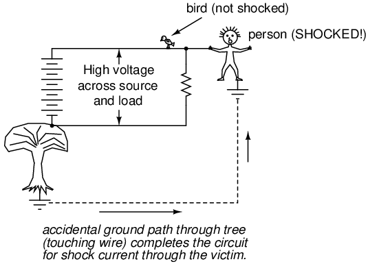
Esta conexión accidental entre un conductor del sistema eléctrico y la tierra se denomina conexión a tierra.falla a tierra. Las fallas a tierra pueden ser causadas por muchas cosas, incluida la acumulación de suciedad en los aisladores de las líneas eléctricas (creando un camino de agua sucia para la corriente desde el conductor hasta el poste y al suelo, cuando llueve), la infiltración de agua subterránea en conductores de líneas eléctricas enterrados y los pájaros que aterrizan en las líneas eléctricas, uniendo la línea hasta el poste con sus alas. Dadas las numerosas causas de las fallas a tierra, tienden a ser impredecibles. En el caso de los árboles, nadie puede garantizarque cablesus ramas podrían tocarse. Si un árbol rozara el cable superior del circuito, sería seguro tocar el cable superior y peligroso el inferior, justo lo contrario del escenario anterior en el que el árbol hace contacto con el cable inferior:
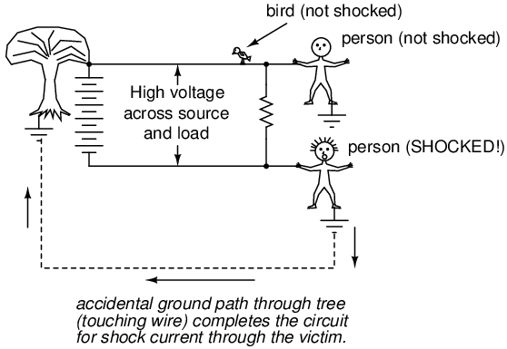
Cuando la rama de un árbol hace contacto con el cable superior, ese cable se convierte en el conductor a tierra del circuito, eléctricamente común con la tierra. Por lo tanto, no hay voltaje entre ese cable y tierra, sino voltaje total (alto) entre el cable inferior y tierra. Como se mencionó anteriormente, las ramas de los árboles son sólo una fuente potencial de fallas a tierra en un sistema eléctrico. Considere un sistema de energía sin conexión a tierra sin árboles en contacto, pero esta vez contwopersonas que tocan cables individuales:
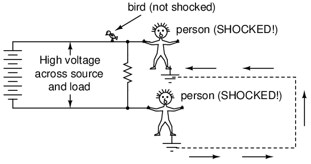
Con cada persona parada en el suelo, en contacto con diferentes puntos del circuito, se crea un camino para la corriente de choque a través de una persona, a través de la tierra y a través de la otra persona. Aunque cada persona piensa que está segura tocando solo un punto del circuito, sus acciones combinadas crean un escenario mortal. En efecto, una persona actúa como falla a tierra, lo que la hace insegura para la otra persona. Esta es exactamente la razón por la que los sistemas eléctricos sin conexión a tierra son peligrosos: el voltaje entre cualquier punto del circuito y tierra es impredecible, porque una falla a tierra podría aparecer en cualquier punto del circuito en cualquier momento. El único personaje que garantiza estar seguro en estos escenarios es el pájaro, ¡que no tiene ninguna conexión a tierra! Al conectar firmemente un punto designado en el circuito a tierra ("poniendo a tierra" el circuito), al menos se puede garantizar la seguridad en ese punto. Esto es una mayor garantía de seguridad que no tener ninguna conexión a tierra.
En respuesta a la segunda pregunta, los zapatos con suela de gomadoDe hecho, proporcionan cierto aislamiento eléctrico para ayudar a proteger a alguien de la conducción de corrientes de choque a través de sus pies. Sin embargo, los diseños de calzado más comunes no pretenden ser eléctricamente "seguros", ya que sus suelas son demasiado delgadas y no tienen la sustancia adecuada. Además, cualquier humedad, suciedad o sales conductoras del sudor corporal en la superficie o permeadas a través de las suelas de los zapatos comprometerán el poco valor aislante que tenía el zapato al principio. Hay zapatos hechos específicamente para trabajos eléctricos peligrosos, así como alfombras de goma gruesas hechas para permanecer de pie mientras se trabaja en circuitos activos, pero estos equipos especiales deben estar en condiciones absolutamente limpias y secas para que sean efectivos. Basta decir que el calzado normal no es suficiente para garantizar la protección contra descargas eléctricas de un sistema eléctrico.
Las investigaciones realizadas sobre la resistencia al contacto entre partes del cuerpo humano y puntos de contacto (como el suelo) muestran una amplia gama de cifras (consulte el final del capítulo para obtener información sobre la fuente de estos datos):
- Contacto con manos o pies, aislado con caucho: 20 MΩ típico.
- Contacto del pie a través de suela de zapato de cuero (seco): 100 kΩ a 500 kΩ
- Contacto del pie a través de suela de zapato de cuero (mojada): 5 kΩ a 20 kΩ
Como puede ver, no sólo el caucho es un material aislante mucho mejor que el cuero, sino que la presencia de agua en una sustancia porosa como el cueromuyreduce la resistencia eléctrica.
En respuesta a la tercera pregunta, la suciedad no es muy buena conductora (¡al menos no cuando está seca!). Es un conductor demasiado pobre para soportar corriente continua para alimentar una carga. Sin embargo, como veremos en la siguiente sección, se necesita muy poca corriente para herir o matar a un ser humano, por lo que incluso la mala conductividad de la tierra es suficiente para proporcionar un camino para la corriente mortal cuando hay suficiente voltaje disponible, como suele ocurrir en los sistemas de energía.
Algunas superficies del suelo son mejores aislantes que otras. El asfalto, por ejemplo, al estar basado en petróleo, tiene una resistencia mucho mayor que la mayoría de las formas de tierra o roca. El hormigón, por otro lado, tiende a tener una resistencia bastante baja debido a su contenido intrínseco de agua y electrolitos (químicos conductores).
- REVISAR:
- La descarga eléctrica sólo puede ocurrir cuando se hace contacto entre dos puntos de un circuito; cuando se aplica voltaje a través del cuerpo de una víctima.
- Los circuitos de energía generalmente tienen un punto designado que está "conectado a tierra": firmemente conectado a varillas o placas de metal enterradas en la tierra para garantizar que un lado del circuito esté siempre en potencial de tierra (voltaje cero entre ese punto y tierra).
- A falla a tierraEs una conexión accidental entre un conductor de circuito y la tierra.
- Se fabrican zapatos y tapetes especiales con aislamiento para proteger a las personas de descargas eléctricas por conducción a tierra, pero incluso estos equipos deben estar en condiciones limpias y secas para que sean efectivos. El calzado normal no es lo suficientemente bueno para brindar protección contra golpes aislando a su usuario de la tierra.
- Aunque la suciedad es un mal conductor, puede conducir suficiente corriente como para herir o matar a un ser humano.
Ohm's Law (again!)
Una frase común que se escucha en referencia a la seguridad eléctrica es algo como esto: "¡No es el voltaje lo que mata, es la corriente!" Si bien hay un elemento de verdad en esto, hay más que entender sobre el riesgo de descarga eléctrica que este simple dicho. Si el voltaje no presentara ningún peligro, nadie imprimiría ni exhibiría carteles que dijeran:PELIGRO: ¡ALTO VOLTAJE!
El principio de que "la corriente mata" es esencialmente correcto. Es una corriente eléctrica que quema tejidos, congela músculos y fibrila corazones. Sin embargo, la corriente eléctrica no ocurre por sí sola: debe haber voltaje disponible para motivar a los electrones a fluir a través de una víctima. El cuerpo de una persona también presenta resistencia a la corriente, lo cual hay que tener en cuenta.
Tomando la ley de Ohm para voltaje, corriente y resistencia y expresándola en términos de corriente para un voltaje y resistencia dados, tenemos esta ecuación:
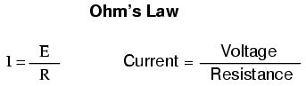
La cantidad de corriente que atraviesa un cuerpo es igual a la cantidad de voltaje aplicado entre dos puntos de ese cuerpo, dividida por la resistencia eléctrica ofrecida por el cuerpo entre esos dos puntos. Obviamente, cuanto más voltaje esté disponible para hacer que los electrones fluyan, más fácilmente fluirán a través de cualquier cantidad de resistencia dada. De ahí el peligro del alto voltaje: alto voltaje significa potencial para que grandes cantidades de corriente atraviesen su cuerpo, lo que lo lastimará o matará. Por el contrario, cuanto más resistencia ofrece un cuerpo a la corriente, más lento fluirán los electrones para cualquier cantidad de voltaje determinada. La cantidad de voltaje que es peligroso depende de cuánta resistencia total haya en el circuito para oponerse al flujo de electrones.
La resistencia corporal no es una cantidad fija. Varía de persona a persona y de vez en cuando. Incluso existe una técnica de medición de la grasa corporal basada en una medición de la resistencia eléctrica entre los dedos de las manos y los pies de una persona. Diferentes porcentajes de grasa corporal dan diferentes resistencias: solo una variable afecta la resistencia eléctrica en el cuerpo humano. Para que la técnica funcione con precisión, la persona debe regular su ingesta de líquidos durante varias horas antes de la prueba, lo que indica que la hidratación corporal es otro factor que afecta la resistencia eléctrica del cuerpo.
La resistencia del cuerpo también varía dependiendo de cómo se hace el contacto con la piel: ¿es de mano a mano, de mano a pie, de pie a pie, de mano a codo, etc.? El sudor, al ser rico en sales y minerales, es un excelente conductor de la electricidad al ser un líquido. También lo es la sangre, con su contenido igualmente alto de sustancias químicas conductoras. Por lo tanto, el contacto con un cable realizado con una mano sudorosa o una herida abierta ofrecerá mucha menos resistencia a la corriente que el contacto realizado con la piel limpia y seca.
Al medir la resistencia eléctrica con un medidor sensible, mido aproximadamente 1 millón de ohmios de resistencia (1 MΩ) entre mis dos manos, sosteniendo las sondas metálicas del medidor entre mis dedos. El medidor indica menos resistencia cuando aprieto las sondas con fuerza y más resistencia cuando las sostengo sin apretar. Sentada aquí frente a mi computadora, escribiendo estas palabras, tengo las manos limpias y secas. Si estuviera trabajando en un entorno industrial caluroso y sucio, la resistencia entre mis manos probablemente sería mucho menor, presentando menos oposición a la corriente mortal y una mayor amenaza de descarga eléctrica.
¿Pero cuánta corriente es dañina? La respuesta a esa pregunta también depende de varios factores. La química corporal individual tiene un impacto significativo en cómo la corriente eléctrica afecta a un individuo. Algunas personas son muy sensibles a la corriente y experimentan contracciones musculares involuntarias con descargas de electricidad estática. Otros pueden generar grandes chispas al descargar electricidad estática y apenas sentirlas, y mucho menos experimentar un espasmo muscular. A pesar de estas diferencias, se han desarrollado pautas aproximadas a través de pruebas que indican que se necesita muy poca corriente para manifestar efectos dañinos (nuevamente, consulte el final del capítulo para obtener información sobre la fuente de estos datos). Todas las cifras actuales dadas en miliamperios (un miliamperio es igual a 1/1000 de amperio):
BODILY EFFECT DIRECT CURRENT (DC) 60 Hz AC 10 kHz AC --------------------------------------------------------------- Slight sensation Men = 1.0 mA 0.4 mA 7 mA felt at hand(s) Women = 0.6 mA 0.3 mA 5 mA --------------------------------------------------------------- Threshold of Men = 5.2 mA 1.1 mA 12 mA perception Women = 3.5 mA 0.7 mA 8 mA --------------------------------------------------------------- Painful, but Men = 62 mA 9 mA 55 mA voluntary muscle Women = 41 mA 6 mA 37 mA control maintained --------------------------------------------------------------- Painful, unable Men = 76 mA 16 mA 75 mA to let go of wires Women = 51 mA 10.5 mA 50 mA --------------------------------------------------------------- Severe pain, Men = 90 mA 23 mA 94 mA difficulty Women = 60 mA 15 mA 63 mA breathing --------------------------------------------------------------- Possible heart Men = 500 mA 100 mA fibrillation Women = 500 mA 100 mA after 3 seconds ---------------------------------------------------------------
"Hz" representa la unidad dehercios, la medida de la rapidez con la que se alterna la corriente alterna, una medida también conocida comofrecuencia. Entonces, la columna de cifras denominada "60 Hz CA" se refiere a la corriente que se alterna a una frecuencia de 60 ciclos (1 ciclo = período de tiempo en el que los electrones fluyen en una dirección y luego en la otra) por segundo. La última columna, denominada "10 kHz CA", se refiere a la corriente alterna que completa diez mil (10 000) ciclos de ida y vuelta cada segundo.
Tenga en cuenta que estas cifras son sólo aproximadas, ya que las personas con diferente química corporal pueden reaccionar de manera diferente. Se ha sugerido que una corriente a través del pecho de sólo 17 miliamperios CA es suficiente para inducir fibrilación en un sujeto humano bajo ciertas condiciones. La mayoría de nuestros datos sobre la fibrilación inducida provienen de pruebas con animales. Obviamente, no es práctico realizar pruebas de fibrilación ventricular inducida en seres humanos, por lo que los datos disponibles son incompletos. Ah, y en caso de que te lo preguntes, ¡no tengo idea de por qué las mujeres tienden a ser más susceptibles a las corrientes eléctricas que los hombres!
Supongamos que colocara mis dos manos sobre los terminales de una fuente de voltaje de CA a 60 Hz (60 ciclos o alternancias de ida y vuelta por segundo). ¿Cuánto voltaje sería necesario en este estado limpio y seco de la piel para producir una corriente de 20 miliamperios (suficiente para hacerme incapaz de soltar la fuente de voltaje)? Podemos usar la Ley de Ohm (E=IR) para determinar esto:
E = IR
E = (20 mA)(1 MΩ)
E = 20,000 volts, or 20 kV
Tenga en cuenta que este es el mejor de los casos (piel limpia y seca) desde el punto de vista de la seguridad eléctrica, y que esta cifra de voltaje representa la cantidad necesaria para inducir el tétanos. ¡Se necesitaría mucho menos para causar un shock doloroso! También tenga en cuenta que los efectos fisiológicos de cualquier cantidad particular de corriente pueden variar significativamente de persona a persona, y que estos cálculos sonestimaciones aproximadas solamente.
Rociando mis dedos con agua para simular el sudor, pude medir una resistencia mano a mano de sólo 17.000 ohmios (17 kΩ). Tenga en cuenta que esto es sólo con un dedo de cada mano en contacto con un alambre de metal delgado. Recalculando el voltaje necesario para provocar una corriente de 20 miliamperios, obtenemos esta cifra:
E = IR
E = (20 mA)(17 kΩ)
E = 340 volts
En esta condición realista, sólo se necesitarían 340 voltios de potencial de una de mis manos a la otra para generar 20 miliamperios de corriente. Sin embargo, aún es posible recibir una descarga mortal con un voltaje menor que este. Proporciona una cifra de resistencia corporal mucho más baja aumentada por el contacto con un anillo (una banda de oro envuelta alrededor de la circunferencia del dedo forma unaexcelentepunto de contacto para descarga eléctrica) o contacto total con un objeto metálico grande, como una tubería o el mango metálico de una herramienta, la cifra de resistencia del cuerpo podría caer hasta 1000 ohmios (1 kΩ), lo que permite que un voltaje aún más bajo presente un peligro potencial:
E = IR
E = (20 mA)(1 kΩ)
E = 20 volts
Observe que en esta condición, 20 voltios son suficientes para producir una corriente de 20 miliamperios a través de una persona: suficiente para inducir el tétanos. Recuerde, se ha sugerido que una corriente de sólo 17 miliamperios puede inducir fibrilación ventricular (corazón). Con una resistencia mano a mano de 1000 Ω, sólo se necesitarían 17 voltios para crear esta peligrosa condición:
E = IR
E = (17 mA)(1 kΩ)
E = 17 volts
Diecisiete voltios no es mucho en lo que a sistemas eléctricos se refiere. Por supuesto, este es el "peor de los casos" con un voltaje de CA de 60 Hz y una excelente conductividad corporal, pero demuestra cuán poco voltaje puede representar una seria amenaza bajo ciertas condiciones.
Las condiciones necesarias para producir 1.000 Ω de resistencia corporal tampoco tienen que ser tan extremas como las presentadas (piel sudorosa con contacto realizado en un anillo de oro). La resistencia del cuerpo puede disminuir con la aplicación de voltaje (especialmente si el tétanos hace que la víctima mantenga un agarre más fuerte sobre un conductor), de modo que con un voltaje constante una descarga puede aumentar en gravedad después del contacto inicial. Lo que comienza como un shock leve (lo suficiente como para "congelar" a la víctima para que no pueda soltarse) puede escalar a algo lo suficientemente grave como para matarla a medida que la resistencia de su cuerpo disminuye y la corriente aumenta en consecuencia.
Las investigaciones han proporcionado un conjunto aproximado de cifras de resistencia eléctrica de los puntos de contacto humano en diferentes condiciones (consulte el final del capítulo para obtener información sobre la fuente de estos datos):
- Cable tocado con el dedo: 40.000 Ω a 1.000.000 Ω seco, 4.000 Ω a 15.000 Ω húmedo.
- Cable sostenido a mano: 15.000 Ω a 50.000 Ω seco, 3.000 Ω a 5.000 Ω húmedo.
- Alicates de metal sostenidos con la mano: 5000 Ω a 10 000 Ω en seco, 1000 Ω a 3000 Ω en húmedo.
- Contacto con la palma de la mano: 3.000 Ω a 8.000 Ω seco, 1.000 Ω a 2.000 Ω húmedo.
- 1.5 inch metal pipe grasped by one hand: 1,000 Ω to 3,000 Ω dry, 500 Ω to 1,500 Ω wet.
- 1.5 inch metal pipe grasped by two hands: 500 Ω to 1,500 kΩ dry, 250 Ω to 750 Ω wet.
- Mano sumergida en líquido conductor: 200 Ω a 500 Ω.
- Pie sumergido en líquido conductor: 100 Ω a 300 Ω.
Tenga en cuenta los valores de resistencia de las dos condiciones que involucran un tubo metálico de 1,5 pulgadas. La resistencia medida con dos manos agarrando el tubo es exactamente la mitad de la resistencia de una mano agarrando el tubo.
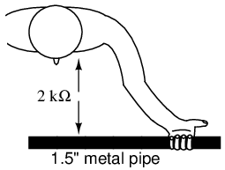
Con las dos manos, el área de contacto corporal es el doble que con una mano. Esta es una lección importante que aprender: la resistencia eléctrica entre cualquier objeto en contacto disminuye a medida que aumenta el área de contacto, siendo todos los demás factores iguales. Con dos manos sosteniendo el tubo, los electrones tienen dos,paralelorutas a través de las cuales fluir desde la tubería al cuerpo (o viceversa).
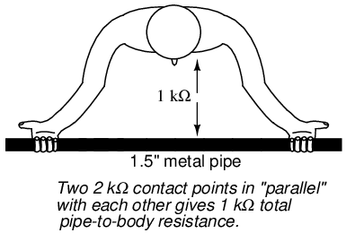
Como veremos en un capítulo posterior,paraleloLas vías del circuito siempre resultan en menos resistencia general que cualquier vía considerada por sí sola.
En la industria, 30 voltios generalmente se considera un valor umbral conservador para voltaje peligroso. La persona cautelosa debe considerar cualquier voltaje superior a 30 voltios como una amenaza y no confiar en la resistencia normal del cuerpo para protegerse contra descargas eléctricas. Dicho esto, sigue siendo una excelente idea mantener las manos limpias y secas y quitarse todas las joyas de metal cuando se trabaja con electricidad. Incluso con voltajes más bajos, las joyas de metal pueden presentar un peligro al conducir suficiente corriente como para quemar la piel si entran en contacto entre dos puntos de un circuito. Los anillos de metal, especialmente, han sido la causa de más de unos pocos dedos quemados al formar puentes entre puntos en un circuito de alta corriente y bajo voltaje.
Además, los voltajes inferiores a 30 pueden ser peligrosos si son suficientes para inducir una sensación desagradable, lo que puede provocar que usted se sacuda y accidentalmente entre en contacto con un voltaje más alto o algún otro peligro. Recuerdo una vez trabajando en un automóvil en un caluroso día de verano. Llevaba pantalones cortos y mi pierna desnuda hacía contacto con el parachoques cromado del vehículo mientras apretaba las conexiones de la batería. Cuando toqué con mi llave de metal el lado positivo (sin conexión a tierra) de la batería de 12 voltios, pude sentir una sensación de hormigueo en el punto donde mi pierna tocaba el parachoques. La combinación del firme contacto con el metal y mi piel sudorosa hizo posible sentir una descarga con sólo 12 voltios de potencial eléctrico.
Afortunadamente, no pasó nada malo, pero si el motor hubiera estado en marcha y el impacto se hubiera sentido en mi mano en lugar de en mi pierna, podría haber tirado reflexivamente mi brazo hacia el camino del ventilador giratorio o haber dejado caer la llave de metal sobre los terminales de la batería (produciendograndecantidades de corriente a través de la llave con muchas chispas). Esto ilustra otra lección importante sobre la seguridad eléctrica; Esa corriente eléctrica en sí misma puede ser una causa indirecta de lesión al provocar que usted salte o sufra espasmos en partes de su cuerpo que le pongan en peligro.
El camino que sigue la corriente a través del cuerpo humano marca la diferencia en cuanto a cuán dañina es. La corriente afectará a cualquier músculo que se encuentre en su camino, y dado que los músculos del corazón y los pulmones (diafragma) son probablemente los más críticos para la supervivencia, las vías de choque que atraviesan el pecho son las más peligrosas. Esto hace que la trayectoria de la corriente de choque de mano a mano sea un modo muy probable de lesión y muerte.
Para protegerse contra esto, es aconsejable utilizar sólo una mano para trabajar en circuitos activos de voltaje peligroso, manteniendo la otra mano metida en un bolsillo para no tocar nada accidentalmente. Por supuesto, essiempreEs más seguro trabajar en un circuito cuando no está alimentado, pero esto no siempre es práctico o posible. Para trabajar con una sola mano, generalmente se prefiere la mano derecha a la izquierda por dos razones: la mayoría de las personas son diestras (lo que garantiza una coordinación adicional al trabajar) y el corazón suele estar situado a la izquierda del centro de la cavidad torácica.
Para aquellos que son zurdos, este consejo puede no ser el mejor. Si una persona así no tiene suficiente coordinación con su mano derecha, puede estar exponiéndose a un mayor peligro al usar la mano con la que se siente menos cómodo, incluso si la corriente de choque a través de esa mano podría representar un mayor peligro para su corazón. El riesgo relativo entre una descarga a través de una mano u otra es probablemente menor que el riesgo de trabajar con una coordinación inferior a la óptima, por lo que es mejor dejar al individuo la elección de con qué mano trabajar.
La mejor protección contra descargas eléctricas de un circuito activo es la resistencia, y se puede agregar resistencia al cuerpo mediante el uso de herramientas, guantes, botas y otros equipos aislados. La corriente en un circuito es función del voltaje disponible dividido por latotalresistencia en el camino del flujo. Como investigaremos con mayor detalle más adelante en este libro, las resistencias tienen un efecto aditivo cuando se apilan de modo que solo haya un camino para que fluyan los electrones:
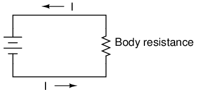
Ahora veremos un circuito equivalente para una persona que lleva guantes y botas aislantes:
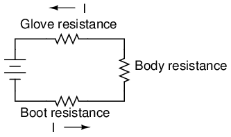
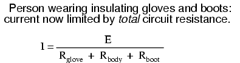
Porque la corriente eléctrica debe pasar a través del maletero.andel cuerpoandel guante para completar su circuito de regreso a la batería, el total combinado (sum) de estas resistencias se opone al flujo de electrones en mayor grado que cualquiera de las resistencias consideradas individualmente.
La seguridad es una de las razones por las que los cables eléctricos suelen estar cubiertos con aislamiento de plástico o caucho: para aumentar enormemente la cantidad de resistencia entre el conductor y quienquiera que pueda entrar en contacto con él. Desafortunadamente, sería prohibitivamente costoso encerrar los conductores de líneas eléctricas en un aislamiento suficiente para brindar seguridad en caso de contacto accidental, por lo que la seguridad se mantiene manteniendo esas líneas lo suficientemente lejos fuera del alcance para que nadie pueda tocarlas accidentalmente.
- REVISAR:
- El daño al cuerpo es función de la cantidad de corriente de choque. Un voltaje más alto permite la producción de corrientes más altas y peligrosas. La resistencia se opone a la corriente, lo que hace que una alta resistencia sea una buena medida de protección contra golpes.
- Generalmente se considera que cualquier voltaje superior a 30 es capaz de generar corrientes de choque peligrosas.
- Definitivamente es malo usar joyas de metal cuando se trabaja cerca de circuitos eléctricos. Los anillos, correas de reloj, collares, pulseras y otros adornos similares proporcionan un excelente contacto eléctrico con el cuerpo y pueden conducir suficiente corriente como para producir quemaduras en la piel, incluso con voltajes bajos.
- Los voltajes bajos aún pueden ser peligrosos incluso si son demasiado bajos como para causar directamente una lesión por descarga eléctrica. Pueden ser suficientes para asustar a la víctima, haciendo que retroceda y entre en contacto con algo más peligroso en las inmediaciones.
- Cuando sea necesario trabajar en un circuito "activo", es mejor realizar el trabajo con una mano para evitar una trayectoria de corriente de choque mortal entre manos (a través del pecho).
Safe practices
Si es posible, corte la alimentación de un circuito antes de realizar cualquier trabajo en él. Debe proteger todas las fuentes de energía dañina antes de que se pueda considerar seguro trabajar en un sistema. En la industria, asegurar un circuito, dispositivo o sistema en esta condición se conoce comúnmente como colocarlo en unEstado de energía cero. El objetivo de esta lección es, por supuesto, la seguridad eléctrica. Sin embargo, muchos de estos principios también se aplican a sistemas no eléctricos.
Asegurar algo en un estado de energía cero significa eliminar cualquier tipo de energía potencial o almacenada, que incluye, entre otros:
- voltaje peligroso
- Presión de resorte
- Presión hidráulica (líquida)
- Presión neumática (aire)
- peso suspendido
- Energía química (sustancias inflamables o reactivas)
- Energía nuclear (sustancias radiactivas o fisionables)
El voltaje por su propia naturaleza es una manifestación de energía potencial. En el primer capítulo incluso utilicé un líquido elevado como analogía de la energía potencial del voltaje, que tiene la capacidad (potencial) de producir corriente (flujo), pero no necesariamente realiza ese potencial hasta que se ha establecido un camino adecuado para el flujo y se supera la resistencia al flujo. Un par de cables con alto voltaje entre ellos no parecen ni suenan peligrosos a pesar de que albergan suficiente energía potencial entre ellos para impulsar cantidades mortales de corriente a través de su cuerpo. Aunque ese voltaje actualmente no está haciendo nada, tiene el potencial de hacerlo, y ese potencial debe neutralizarse antes de que sea seguro contactar físicamente con esos cables.
Todos los circuitos diseñados correctamente tienen mecanismos de interruptor de "desconexión" para asegurar el voltaje de un circuito. A veces, estas "desconexiones" tienen el doble propósito de abrirse automáticamente en condiciones de corriente excesiva, en cuyo caso las llamamos "disyuntores". Otras veces, los seccionadores son dispositivos estrictamente operados manualmente sin función automática. En cualquier caso, están ahí para su protección y deben usarse correctamente. Tenga en cuenta que el dispositivo de desconexión debe estar separado del interruptor normal que se utiliza para encender y apagar el dispositivo. Es un interruptor de seguridad que debe usarse únicamente para proteger el sistema en un estado de energía cero:
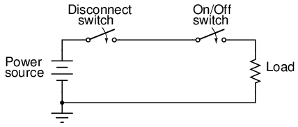
Con el interruptor de desconexión en la posición "abierto" como se muestra (sin continuidad), el circuito se interrumpe y no existirá corriente. Habrá voltaje cero en la carga y el voltaje total de la fuente caerá en los contactos abiertos del interruptor de desconexión. Tenga en cuenta que no es necesario un interruptor de desconexión en el conductor inferior del circuito. Debido a que ese lado del circuito está firmemente conectado a tierra, es eléctricamente común con la tierra y es mejor dejarlo así. Para máxima seguridad del personal que trabaja en la carga de este circuito, se podría establecer una conexión a tierra temporal en la parte superior de la carga, para garantizar que nunca se pueda caer voltaje en la carga:
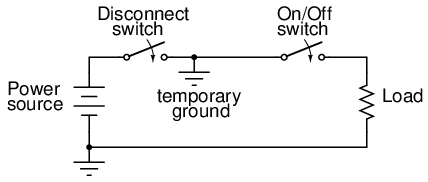
Con la conexión a tierra temporal en su lugar, ambos lados del cableado de carga están conectados a tierra, asegurando un estado de energía cero en la carga.
Dado que una conexión a tierra realizada en ambos lados de la carga es eléctricamente equivalente a un cortocircuito a través de la carga con un cable, esa es otra forma de lograr el mismo objetivo de máxima seguridad:
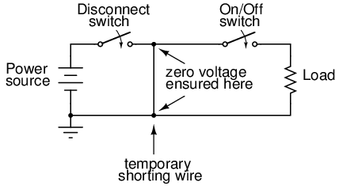
De cualquier manera, ambos lados de la carga serán eléctricamente comunes a la tierra, lo que no permitirá que haya voltaje (energía potencial) entre ambos lados de la carga y el suelo sobre el que se encuentran las personas. Esta técnica de poner a tierra temporalmente conductores en un sistema eléctrico desenergizado es muy común en trabajos de mantenimiento realizados en sistemas de distribución de energía de alto voltaje.
Un beneficio adicional de esta precaución es la protección contra la posibilidad de que el interruptor de desconexión se cierre (se "encienda" para que se establezca la continuidad del circuito) mientras las personas todavía están en contacto con la carga. El cable temporal conectado a través de la carga crearía un cortocircuito cuando se cerrara el interruptor de desconexión, lo que activaría inmediatamente cualquier dispositivo de protección contra sobrecorriente (disyuntores o fusibles) en el circuito, lo que cortaría la energía nuevamente. Es muy posible que el interruptor de desconexión sufra daños si esto sucediera, pero los trabajadores en la carga se mantienen a salvo.
Sería bueno mencionar en este punto que los dispositivos contra sobrecorriente no están destinados a brindar protección contra descargas eléctricas. Más bien, existen únicamente para proteger a los conductores del sobrecalentamiento debido a corrientes excesivas. Los cables de cortocircuito temporal que acabamos de describir causarían que cualquier dispositivo de sobrecorriente en el circuito se "dispare" si el interruptor de desconexión estuviera cerrado, pero tenga en cuenta que la protección contra descargas eléctricas no es la función prevista de esos dispositivos. Su función principal sería simplemente aprovecharse con el fin de proteger a los trabajadores con el cable de cortocircuito colocado.
Dado que obviamente es importante poder asegurar cualquier dispositivo de desconexión en la posición abierta (apagado) y asegurarse de que permanezca así mientras se trabaja en el circuito, es necesario implementar un sistema de seguridad estructurado. Este sistema se utiliza comúnmente en la industria y se llamaBloqueo/Etiquetado.
Un procedimiento de bloqueo/etiquetado funciona así: todas las personas que trabajan en un circuito seguro tienen su propio candado personal o cerradura de combinación que colocan en la palanca de control de un dispositivo de desconexión antes de trabajar en el sistema. Además, deben completar y firmar una etiqueta que cuelgan de su candado que describe la naturaleza y duración del trabajo que pretenden realizar en el sistema. Si hay múltiples fuentes de energía que "bloquear" (múltiples desconexiones, fuentes de energía eléctrica y mecánica que deben asegurarse, etc.), el trabajador debe usar tantas cerraduras como sea necesario para asegurar la energía del sistema antes de que comience el trabajo. De esta manera, el sistema se mantiene en un estado de energía cero hasta que se retira hasta el último candado de todos los dispositivos de desconexión y apagado, y eso significa que hasta el último trabajador da su consentimiento quitando sus propios candados personales. Si se toma la decisión de reactivar el sistema y las cerraduras de una persona aún permanecen en su lugar después de que todos los presentes retiren las suyas, las etiquetas mostrarán quién es esa persona y qué está haciendo.
Incluso con un buen programa de seguridad de bloqueo y etiquetado, todavía es necesario actuar con diligencia y tomar precauciones con sentido común. Esto es especialmente cierto en entornos industriales donde una multitud de personas pueden estar trabajando en un dispositivo o sistema a la vez. Es posible que algunas de esas personas no conozcan el procedimiento adecuado de bloqueo/etiquetado, o que lo sepan pero sean demasiado complacientes para seguirlo. ¡No asuma que todos han seguido las reglas de seguridad!
Después de bloquear un sistema eléctrico y etiquetarlo con su propio candado personal, debe volver a verificar para ver si el voltaje realmente se ha asegurado en un estado cero. Una forma de comprobarlo es ver si la máquina (o cualquier cosa en la que se esté trabajando) se iniciará si elComenzarse acciona el interruptor o botón. Si comienza, entonces sabrá que no le ha asegurado correctamente la energía eléctrica.
Además, deberíassiempreVerifique la presencia de voltaje peligroso con un dispositivo de medición antes de tocar cualquier conductor en el circuito. Para estar más seguro, debe seguir este procedimiento de verificación, uso y luego verificación de su medidor:
- Verifique que su medidor indique correctamente una fuente de voltaje conocida.
- Utilice su medidor para probar el circuito bloqueado en busca de voltaje peligroso.
- Verifique su medidor una vez más con una fuente de voltaje conocida para ver si todavía indica como debería.
Si bien esto puede parecer excesivo o incluso paranoico, es una técnica comprobada para prevenir descargas eléctricas. Una vez tuve un medidor que no indicaba el voltaje cuando debería haberlo hecho mientras revisaba un circuito para ver si estaba "muerto". Si no hubiera utilizado otros medios para comprobar la presencia de voltaje, es posible que hoy no estuviera vivo para escribir esto. Siempre existe la posibilidad de que su medidor de voltaje esté defectuoso justo cuando lo necesita para verificar si hay una condición peligrosa. Seguir estos pasos le ayudará a garantizar que un medidor roto nunca lo engañe y lo lleve a una situación mortal.
Finalmente, el trabajador eléctrico llegará a un punto del procedimiento de control de seguridad en el que se considerará seguro tocar los conductores. Tenga en cuenta que después de haber tomado todas las medidas de precaución, todavía es posible (aunque muy poco probable) que exista un voltaje peligroso. Una última medida de precaución a tomar en este punto es hacer contacto momentáneo con los conductores.con el dorso de la manoantes de agarrarlo o una herramienta metálica en contacto con él. ¿Por qué? Si, por alguna razón, todavía hay voltaje presente entre ese conductor y tierra, el movimiento de los dedos debido a la reacción de choque (apretar el puño)rompercontacto con el conductor. Tenga en cuenta que este es absolutamente elúltimopaso que cualquier trabajador eléctrico debe tomar antes de comenzar a trabajar en un sistema de energía, y debenuncautilizarse como método alternativo para comprobar si hay voltaje peligroso. Si alguna vez tiene motivos para dudar de la confiabilidad de su medidor, use otro medidor para obtener una "segunda opinión".
- REVISAR:
- Estado de energía cero: Cuando un circuito, dispositivo o sistema se ha asegurado de manera que no exista energía potencial que pueda dañar a alguien que trabaje en él.
- Los dispositivos de desconexión deben estar presentes en un sistema eléctrico diseñado adecuadamente para permitir una preparación conveniente para un estado de energía cero.
- Se pueden conectar cables de puesta a tierra o de cortocircuito temporales a una carga a la que se le da servicio para brindar protección adicional al personal que trabaja en esa carga.
- Bloqueo/EtiquetadoFunciona así: cuando se trabaja en un sistema en un estado de energía cero, el trabajador coloca un candado personal o una cerradura de combinación en cada dispositivo de desconexión de energía relevante para su tarea en ese sistema. Además, en cada una de esas cerraduras se cuelga una etiqueta que describe la naturaleza y duración del trabajo a realizar y quién lo realiza.
- Siempre verifique que un circuito se haya asegurado en un estado de energía cero con un equipo de prueba después de "bloquearlo". Asegúrese de probar su medidor antes y después de revisar el circuito para verificar que esté funcionando correctamente.
- Cuando llegue el momento de hacer contacto con los conductores de un sistema de energía supuestamente muerto, hágalo primero con el dorso de una mano, de modo que si se produce una descarga, la reacción muscular aleje los dedos del conductor.
Emergency response
A pesar de los procedimientos de bloqueo/etiquetado y las múltiples repeticiones de reglas de seguridad eléctrica en la industria, todavía ocurren accidentes. La gran mayoría de las veces, estos accidentes son el resultado de no seguir los procedimientos de seguridad adecuados. Pero, independientemente de cómo ocurran, siguen sucediendo, y cualquiera que trabaje cerca de sistemas eléctricos debe ser consciente de lo que se debe hacer ante una víctima de una descarga eléctrica.
Si ve a alguien inconsciente o "congelado en el circuito", lo primero que debe hacer es cortar la energía abriendo el interruptor de desconexión o el disyuntor correspondiente. Si alguien toca a otra persona que está recibiendo una descarga, es posible que caiga suficiente voltaje en el cuerpo de la víctima para electrocutar al posible rescatador, "congelando" así a dos personas en lugar de una. No seas un héroe. Los electrones no respetan el heroísmo. Asegúrese de que la situación sea segura para usted, o de lo contrariovoluntadSea la próxima víctima y nadie se beneficiará de sus esfuerzos.
Un problema con esta regla es que es posible que no se conozca la fuente de energía o que no se la encuentre fácilmente a tiempo para salvar a la víctima del shock. Si la respiración y los latidos del corazón de una víctima de una descarga eléctrica quedan paralizados por la corriente eléctrica, su tiempo de supervivencia es muy limitado. Si la corriente de choque es de magnitud suficiente, su carne y órganos internos pueden quemarse rápidamente por el poder que la corriente disipa a medida que recorre su cuerpo.
Si el interruptor de desconexión de energía no se puede ubicar lo suficientemente rápido, es posible sacar a la víctima del circuito en el que está congelada haciendo palanca o golpeándola con una tabla de madera seca o un trozo de conducto no metálico, elementos comunes que se encuentran en escenas de construcción industrial. Otro elemento que podría usarse para alejar con seguridad a una víctima "congelada" del contacto con la electricidad es un cable de extensión. Al enrollar una cuerda alrededor de su torso y usarla como cuerda para alejarlos del circuito, se puede romper su agarre sobre los conductores. Tenga en cuenta que la víctima se aferrará al conductor con todas sus fuerzas, por lo que alejarlo probablemente no será fácil.
Una vez que la víctima ha sido desconectada de forma segura de la fuente de energía eléctrica, las preocupaciones médicas inmediatas para la víctima deben ser la respiración y la circulación (respiración y pulso). Si el socorrista está capacitado en RCP, debe seguir los pasos apropiados para verificar la respiración y el pulso y luego aplicar RCP según sea necesario para evitar que el cuerpo de la víctima se desoxigene. La regla fundamental de la RCP essigue adelantehasta que haya sido relevado por personal cualificado.
Si la víctima está consciente, es mejor dejarla quieta hasta que llegue el personal calificado de emergencia. Existe la posibilidad de que la víctima entre en un estado de shock fisiológico (una condición de circulación sanguínea insuficiente diferente de una descarga eléctrica), por lo que se debe mantenerla lo más abrigada y cómoda posible. Una descarga eléctrica insuficiente para provocar la interrupción inmediata de los latidos del corazón puede ser lo suficientemente fuerte como para provocar irregularidades cardíacas o un ataque cardíaco hasta varias horas después, por lo que la víctima debe prestar mucha atención a su propio estado después del incidente, idealmente bajo supervisión.
- REVISAR:
- Una persona que recibe una descarga eléctrica debe ser desconectada de la fuente de energía eléctrica. Localice el interruptor/disyuntor de desconexión y apáguelo. Alternativamente, si no se puede localizar el dispositivo de desconexión, se puede hacer palanca o sacar a la víctima del circuito con un objeto aislado, como una tabla de madera seca, un trozo de conducto no metálico o un cable eléctrico de goma.
- Las víctimas necesitan una respuesta médica inmediata: comprobar la respiración y el pulso, luego aplicar RCP según sea necesario para mantener la oxigenación.
- Si una víctima todavía está consciente después de haber recibido una descarga eléctrica, es necesario vigilarla y cuidarla de cerca hasta que llegue personal capacitado en respuesta a emergencias. Existe peligro de shock fisiológico, así que mantenga a la víctima abrigada y cómoda.
- Las víctimas de una descarga eléctrica pueden sufrir problemas cardíacos hasta varias horas después de recibir la descarga. El peligro de descarga eléctrica no termina después de la atención médica inmediata.
Common sources of hazard
Por supuesto, existe peligro de descarga eléctrica al realizar trabajos manuales directamente en un sistema de energía eléctrica. Sin embargo, el riesgo de descarga eléctrica existe en muchos otros lugares, gracias al uso generalizado de la energía eléctrica en nuestras vidas.
Como vimos anteriormente, la resistencia de la piel y el cuerpo tiene mucho que ver con el peligro relativo de los circuitos eléctricos. Cuanto mayor sea la resistencia del cuerpo, es menos probable que se produzca una corriente dañina a partir de cualquier cantidad de voltaje determinada. Por el contrario, cuanto menor sea la resistencia del cuerpo, mayor será la probabilidad de que se produzcan lesiones por la aplicación de un voltaje.
La forma más sencilla de disminuir la resistencia de la piel es mojarla. Por lo tanto, tocar dispositivos eléctricos con las manos mojadas, los pies mojados o especialmente cuando se está sudando (el agua salada es mucho mejor conductora de la electricidad que el agua dulce) es peligroso. En el hogar, el baño es uno de los lugares donde es más probable que las personas mojadas entren en contacto con los aparatos eléctricos, por lo que el peligro de descarga eléctrica es un claro peligro allí. Un buen diseño de baño ubicará los receptáculos de energía lejos de bañeras, duchas y lavabos para desalentar el uso de electrodomésticos cercanos. Los teléfonos que se conectan a un enchufe de pared también son fuentes de voltaje peligroso (el voltaje del circuito abierto es de 48 voltios CC y la señal de timbre es de 150 voltios CA; ¡recuerde que cualquier voltaje superior a 30 se considera potencialmente peligroso!). Nunca, jamás, se deben utilizar aparatos como teléfonos y radios mientras se está sentado en una bañera. Incluso se deben evitar los dispositivos que funcionan con baterías. Algunos dispositivos que funcionan con baterías emplean circuitos que aumentan el voltaje y son capaces de generar potenciales letales.
Las piscinas son otra fuente de problemas, ya que la gente suele utilizar radios y otros aparatos eléctricos en las proximidades. El Código Eléctrico Nacional exige que se instalen receptáculos especiales de detección de descargas llamados interruptores de corriente por falla a tierra (GFI o GFCI) en áreas húmedas y al aire libre para ayudar a prevenir incidentes de descargas eléctricas. Más información sobre estos dispositivos en una sección posterior de este capítulo. Sin duda, estos dispositivos especiales han salvado muchas vidas, pero no pueden sustituir el sentido común y la precaución diligente. Al igual que con las armas de fuego, la mejor "seguridad" es un operador informado y concienzudo.
Los cables de extensión, tan comúnmente utilizados en el hogar y en la industria, también son fuentes de peligro potencial. Todos los cables deben inspeccionarse periódicamente para detectar abrasión o grietas en el aislamiento y repararse de inmediato. Un método seguro para retirar del servicio un cable dañado es desenchufarlo del receptáculo y luego cortar ese enchufe (el enchufe "macho") con un par de alicates de corte lateral para asegurarse de que nadie pueda usarlo hasta que esté reparado. Esto es importante en los lugares de trabajo, donde muchas personas comparten el mismo equipo y es posible que no todas las personas allí estén conscientes de los peligros.
Cualquier herramienta eléctrica que muestre evidencia de problemas eléctricos también debe recibir servicio de inmediato. He escuchado varias historias de terror de personas que continúan trabajando con herramientas manuales que periódicamente los impactan. Recordar,la electricidad puede matar, y la muerte que provoca puede ser espantosa. Al igual que los cables de extensión, una herramienta eléctrica defectuosa se puede retirar del servicio desenchufándola y cortando el enchufe en el extremo del cable.
Las líneas eléctricas caídas son una fuente obvia de peligro de descarga eléctrica y deben evitarse a toda costa. Los voltajes presentes entre las líneas eléctricas o entre una línea eléctrica y tierra suelen ser muy altos (siendo 2400 voltios uno de los voltajes más bajos utilizados en los sistemas de distribución residencial). Si una línea eléctrica se rompe y el conductor de metal cae al suelo, el resultado inmediato generalmente será una enorme cantidad de arcos (se producen chispas), a menudo suficientes para desalojar trozos de concreto o asfalto de la superficie de la carretera, y disparos que rivalizan con los de un rifle o una escopeta. Entrar en contacto directo con una línea eléctrica caída es casi seguro que causará la muerte, pero existen otros peligros que no son tan obvios.
Cuando una línea toca el suelo, la corriente viaja entre ese conductor caído y el punto de tierra más cercano en el sistema, estableciendo así un circuito:
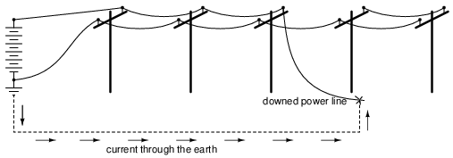
La tierra, al ser un conductor (aunque sea pobre), conducirá la corriente entre la línea caída y el punto de tierra del sistema más cercano, que será una especie de conductor enterrado en el suelo para un buen contacto. Dado que la tierra es un conductor de electricidad mucho peor que los cables metálicos tendidos a lo largo de los postes de energía, habrá una caída sustancial de voltaje entre el punto de contacto del cable con la tierra y el conductor de conexión a tierra, y poca caída de voltaje a lo largo del cableado (las siguientes figuras sonmuyaproximado):
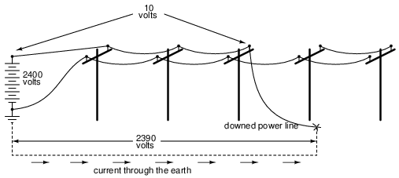
Si la distancia entre los dos puntos de contacto a tierra (el cable caído y la tierra del sistema) es pequeña, habrá una caída sustancial de voltaje en distancias cortas entre los dos puntos. Por lo tanto, una persona parada en el suelo entre esos dos puntos correrá el peligro de recibir una descarga eléctrica al interceptar un voltaje entre sus dos pies.
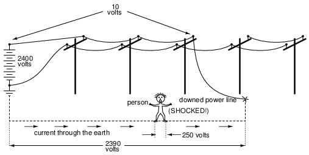
Nuevamente, estas cifras de voltaje son muy aproximadas, pero sirven para ilustrar un peligro potencial: ¡que una persona puede convertirse en víctima de una descarga eléctrica debido a una línea eléctrica caída sin siquiera entrar en contacto con esa línea!
Una precaución práctica que una persona podría tomar si ve una línea eléctrica cayendo hacia el suelo es contactar el suelo solo en un punto, ya sea huyendo (cuando corres, solo un pie toca el suelo en un momento dado), o si no hay ningún lugar para correr, parándote sobre un pie. Obviamente, si hay un lugar más seguro para correr, correr es la mejor opción. Al eliminar dos puntos de contacto con el suelo, no habrá posibilidad de aplicar un voltaje mortal en todo el cuerpo a través de ambas piernas.
- REVISAR:
- Las condiciones húmedas aumentan el riesgo de descarga eléctrica al reducir la resistencia de la piel.
- Reemplace inmediatamente los cables de extensión y las herramientas eléctricas desgastados o dañados. Puede evitar el uso inocente de un cable o herramienta en mal estado cortando el enchufe macho del cable (mientras está desenchufado del receptáculo, por supuesto).
- Las líneas eléctricas son muy peligrosas y deben evitarse a toda costa. Si ve una línea a punto de tocar el suelo, párese sobre un pie o corra (solo un pie en contacto con el suelo) para evitar descargas causadas por la caída de voltaje en el suelo entre la línea y el punto de tierra del sistema.
Safe circuit design
Como vimos anteriormente, un sistema de energía sin una conexión segura a tierra es impredecible desde una perspectiva de seguridad: no hay manera de garantizar cuánto o qué poco voltaje existirá entre cualquier punto del circuito y tierra. Al conectar a tierra un lado de la fuente de voltaje del sistema de energía, se puede garantizar que al menos un punto del circuito sea eléctricamente común con la tierra y, por lo tanto, no presente riesgo de descarga eléctrica. En un sistema eléctrico simple de dos hilos, el conductor conectado a tierra se llamaneutral, y el otro conductor se llamahot, también conocido como elviviro elactivo:
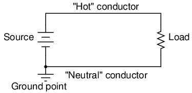
En lo que respecta a la fuente de tensión y la carga, la conexión a tierra no supone ninguna diferencia. Existe únicamente por motivos de seguridad del personal, al garantizar que al menos un punto del circuito será seguro de tocar (voltaje cero a tierra). Será peligroso tocar el lado "caliente" del circuito, llamado así por su potencial de riesgo de descarga eléctrica, a menos que el voltaje esté asegurado mediante una desconexión adecuada de la fuente (idealmente, utilizando un procedimiento sistemático de bloqueo/etiquetado).
Es importante comprender este desequilibrio de peligros entre los dos conductores en un circuito eléctrico simple. La siguiente serie de ilustraciones se basa en sistemas de cableado domésticos comunes (utilizando fuentes de voltaje de CC en lugar de CA para simplificar).
Si echamos un vistazo a un electrodoméstico sencillo, como una tostadora con una carcasa de metal conductora, podemos ver que no debería haber peligro de descarga eléctrica cuando funciona correctamente. Los cables que conducen la energía al elemento calefactor de la tostadora están aislados para que no toquen la caja de metal (y entre sí) mediante caucho o plástico.
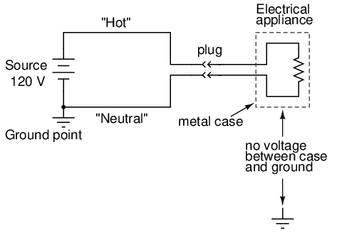
Sin embargo, si uno de los cables dentro de la tostadora entrara accidentalmente en contacto con la caja metálica, la caja se volverá eléctricamente común al cable, y tocar la caja será tan peligroso como tocar el cable desnudo. Si esto presenta o no un riesgo de descarga eléctrica depende decualEl cable toca accidentalmente:
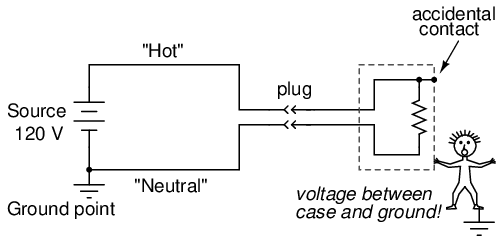
Si el cable "caliente" entra en contacto con la carcasa, pone en peligro al usuario de la tostadora. Por otro lado, si el cable neutro entra en contacto con la caja, no hay peligro de descarga eléctrica:
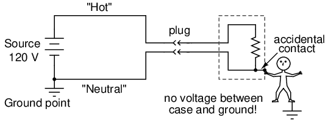
Para ayudar a garantizar que la primera falla sea menos probable que la segunda, los ingenieros intentan diseñar los aparatos de tal manera que se minimice el contacto del conductor caliente con la carcasa. Lo ideal, por supuesto, es que no desee que ninguno de los cables entre accidentalmente en contacto con la carcasa conductora del electrodoméstico, pero generalmente hay formas de diseñar la disposición de las piezas para que el contacto accidental sea menos probable para un cable que para el otro. Sin embargo, esta medida preventiva sólo es eficaz si se puede garantizar la polaridad del enchufe. Si el enchufe se puede invertir, entonces el conductor con mayor probabilidad de entrar en contacto con la carcasa podría ser el "caliente":
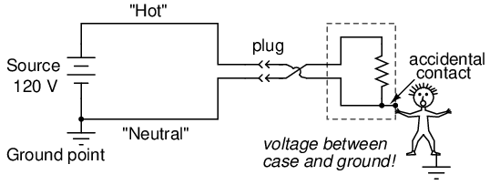
Los aparatos diseñados de esta manera suelen venir con enchufes "polarizados", siendo una clavija del enchufe ligeramente más estrecha que la otra. Los tomacorrientes también están diseñados de esta manera, siendo una ranura más estrecha que la otra. En consecuencia, el enchufe no se puede insertar "al revés" y se puede garantizar la identidad del conductor dentro del aparato. Recuerde que esto no tiene ningún efecto sobre el funcionamiento básico del aparato: es estrictamente por el bien de la seguridad del usuario.
Algunos ingenieros abordan el problema de la seguridad simplemente haciendo que la carcasa exterior del aparato no sea conductora. Estos aparatos se llamandoble aislamiento, ya que la carcasa aislante sirve como una segunda capa de aislamiento por encima y más allá de los propios conductores. Si un cable dentro del aparato entra accidentalmente en contacto con la carcasa, no se presenta ningún peligro para el usuario del aparato.
Otros ingenieros abordan el problema de la seguridad manteniendo una carcasa conductora, pero utilizando un tercer conductor para conectar firmemente esa carcasa a tierra:
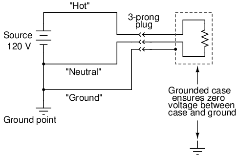
La tercera clavija del cable de alimentación proporciona una conexión eléctrica directa desde la caja del aparato a tierra, haciendo que los dos puntos sean eléctricamente comunes entre sí. Si son eléctricamente comunes, entonces no puede haber ninguna caída de voltaje entre ellos. Al menos así es como se supone que debe funcionar. Si el conductor caliente toca accidentalmente la caja metálica del aparato, creará un cortocircuito directo a la fuente de voltaje a través del cable de tierra, activando cualquier dispositivo de protección contra sobrecorriente. El usuario del aparato permanecerá seguro.
Por eso es tan importante nunca cortar la tercera clavija de un enchufe cuando se intenta conectarlo a un receptáculo de dos clavijas. Si se hace esto, no habrá conexión a tierra en la caja del aparato para mantener seguros a los usuarios. El aparato seguirá funcionando correctamente, pero si hay una falla interna que hace que el cable caliente entre en contacto con la carcasa, los resultados pueden ser mortales. Si un receptáculo de dos clavijasdebePara usar, se puede instalar un adaptador de receptáculo de dos a tres clavijas con un cable de conexión a tierra conectado al tornillo de la cubierta de conexión a tierra del receptáculo. Esto mantendrá la seguridad del aparato conectado a tierra mientras esté enchufado a este tipo de receptáculo.
Sin embargo, la ingeniería eléctricamente segura no termina necesariamente en la carga. Se puede disponer una protección final contra descargas eléctricas en el lado de la fuente de alimentación del circuito en lugar del aparato en sí. Esta salvaguardia se llamadetección de falla a tierra, y funciona así:
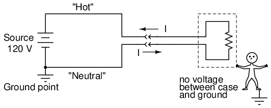
En un aparato que funcione correctamente (como se muestra arriba), la corriente medida a través del conductor caliente debe ser exactamente igual a la corriente a través del conductor neutro, porque solo hay un camino para que los electrones fluyan en el circuito. Sin fallas dentro del aparato, no hay conexión entre los conductores del circuito y la persona que toca la carcasa y, por lo tanto, no hay descarga eléctrica.
Sin embargo, si el cable caliente entra accidentalmente en contacto con la caja metálica, pasará corriente a través de la persona que toque la caja. La presencia de una corriente de choque se manifestará como unadiferenciade corriente entre los dos conductores de potencia en el receptáculo:
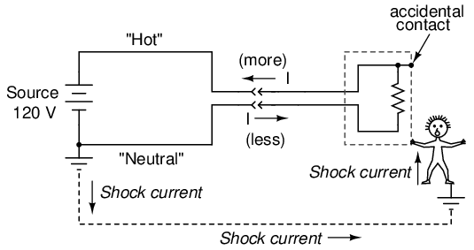
Esta diferencia de corriente entre los conductores “caliente” y “neutro” sólo existirá si hay corriente a través de la conexión a tierra, es decir que hay una falla en el sistema. Por lo tanto, dicha diferencia actual se puede utilizar como una forma dedetectaruna condición de falla. Si se configura un dispositivo para medir esta diferencia de corriente entre los dos conductores de alimentación, se puede utilizar una detección de desequilibrio de corriente para activar la apertura de un interruptor de desconexión, cortando así la alimentación y evitando descargas graves:
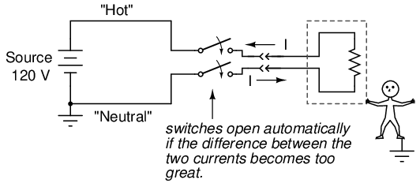
Estos dispositivos se llamanInterruptores de corriente de falla a tierra, o GFCI para abreviar. Fuera de América del Norte, el GFCI se conoce como interruptor de seguridad, dispositivo de corriente residual (RCD), RCBO o RCD/MCB si se combina con un disyuntor en miniatura o un disyuntor de fuga a tierra (ELCB). Son lo suficientemente compactos como para integrarlos en un receptáculo de energía. Estos receptáculos se identifican fácilmente por sus botones distintivos de "Prueba" y "Reinicio". La gran ventaja de utilizar este enfoque para garantizar la seguridad es que funciona independientemente del diseño del aparato. Por supuesto, sería aún mejor usar un electrodoméstico con doble aislamiento o con conexión a tierra además de un receptáculo GFCI, pero es reconfortante saber que se puede hacer algo para mejorar la seguridad más allá del diseño y la condición del electrodoméstico.
The interruptor de circuito por falla de arco (AFCI), un disyuntor diseñado para prevenir incendios, está diseñado para abrirse en cortocircuitos resistivos intermitentes. Por ejemplo, un disyuntor normal de 15 A está diseñado para abrir el circuito rápidamente si se carga mucho más allá de la clasificación de 15 A, más lentamente un poco más allá de la clasificación. Si bien esto protege contra cortocircuitos directos y varios segundos de sobrecarga, respectivamente, no protege contra arcos, similar a la soldadura por arco. Un arco es una carga muy variable, que alcanza un máximo repetitivo de más de 70 A, en circuito abierto con cruces por cero de corriente alterna. Sin embargo, la corriente promedio no es suficiente para activar un disyuntor estándar, sino suficiente para provocar un incendio. Este arco podría crearse mediante un cortocircuito metálico que quema el metal y deja un plasma resistivo de gases ionizados.
El AFCI contiene circuitos electrónicos para detectar este cortocircuito resistivo intermitente. Protege contra arcos calientes a neutro y calientes a tierra. El AFCI no protege contra riesgos de descargas personales como lo hace un GFCI. Por lo tanto, aún es necesario instalar GFCI en circuitos de cocina, baño y exteriores. Dado que el AFCI a menudo se dispara al arrancar motores grandes y, más generalmente, en motores con escobillas, su instalación está limitada a circuitos de dormitorio según el código eléctrico nacional de EE. UU. El uso de AFCI debería reducir la cantidad de incendios eléctricos. Sin embargo, los disparos molestos cuando se hacen funcionar aparatos con motores en circuitos AFCI son un problema.
- REVISAR:
- Los sistemas de energía a menudo tienen un lado del suministro de voltaje conectado a tierra para garantizar la seguridad en ese punto.
- El conductor "puesto a tierra" en un sistema eléctrico se llamaneutralconductor, mientras que el conductor no puesto a tierra se llamahot.
- La conexión a tierra en los sistemas de energía existe por razones de seguridad del personal, no por el funcionamiento de las cargas.
- La seguridad eléctrica de un electrodoméstico u otra carga se puede mejorar mediante una buena ingeniería: enchufes polarizados, doble aislamiento y enchufes de "conexión a tierra" de tres clavijas son todas formas de maximizar la seguridad en el lado de la carga.
- Interruptores de corriente de falla a tierra(GFCI) funcionan detectando una diferencia de corriente entre los dos conductores que suministran energía a la carga. No debería haber ninguna diferencia en la corriente. Cualquier diferencia significa que la corriente debe entrar o salir de la carga por algún medio distinto de los dos conductores principales, lo cual no es bueno. Una diferencia de corriente significativa abrirá automáticamente un mecanismo de interruptor de desconexión, cortando la energía por completo.
Safe meter usage
Usar un medidor eléctrico de manera segura y eficiente es quizás la habilidad más valiosa que un técnico en electrónica puede dominar, tanto por su seguridad personal como por su competencia en su oficio. Al principio puede resultar desalentador utilizar un medidor, sabiendo que lo está conectando a circuitos activos que pueden albergar niveles de voltaje y corriente potencialmente mortales. Esta preocupación no es infundada y siempre es mejor proceder con cautela al utilizar medidores. El descuido, más que cualquier otro factor, es lo que provoca que los técnicos experimentados tengan accidentes eléctricos.
El equipo de prueba eléctrica más común es un medidor llamadomultímetro. Los multímetros se llaman así porque tienen la capacidad de medir múltiples variables: voltaje, corriente, resistencia y, a menudo, muchas otras, algunas de las cuales no pueden explicarse aquí debido a su complejidad. En manos de un técnico capacitado, el multímetro es a la vez una herramienta de trabajo eficaz y un dispositivo de seguridad. Sin embargo, en manos de alguien ignorante y/o descuidado, el multímetro puede convertirse en una fuente de peligro cuando se conecta a un circuito "vivo".
Hay muchas marcas diferentes de multímetros, con múltiples modelos fabricados por cada fabricante con diferentes conjuntos de características. El multímetro que se muestra aquí en las siguientes ilustraciones es un diseño "genérico", no específico de ningún fabricante, pero sí lo suficientemente general como para enseñar los principios básicos de uso:
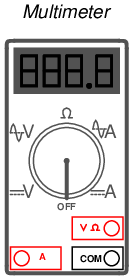
Notarás que la pantalla de este medidor es del tipo "digital": muestra valores numéricos usando cuatro dígitos de manera similar a un reloj digital. El interruptor selector giratorio (ahora colocado en la posiciónOffposición) tiene cinco posiciones de medición diferentes en las que se puede configurar: dos configuraciones "V", dos configuraciones "A" y una configuración en el medio con un símbolo de "herradura" de aspecto divertido que representa "resistencia". El símbolo de "herradura" es la letra griega "Omega" (Ω), que es el símbolo común de la unidad eléctrica de ohmios.
De las dos configuraciones "V" y dos configuraciones "A", notarás que cada par está dividido en marcadores únicos con un par de líneas horizontales (una continua y otra discontinua) o una línea discontinua con una curva ondulada sobre ella. Las líneas paralelas representan "DC", mientras que la curva ondulada representa "AC". Por supuesto, la "V" significa "voltaje", mientras que la "A" significa "amperaje" (corriente). El medidor utiliza técnicas diferentes, internamente, para medir CC que las que utiliza para medir CA, por lo que requiere que el usuario seleccione qué tipo de voltaje (V) o corriente (A) se va a medir. Aunque no hemos analizado la corriente alterna (CA) en ningún detalle técnico, es importante tener en cuenta esta distinción en la configuración del medidor.
Hay tres enchufes diferentes en la cara del multímetro en los que podemos enchufar nuestrocables de prueba. Los cables de prueba no son más que cables especialmente preparados que se utilizan para conectar el medidor al circuito bajo prueba. Los cables están recubiertos con un aislamiento flexible codificado por colores (negro o rojo) para evitar que las manos del usuario entren en contacto con los conductores desnudos, y las puntas de las sondas son piezas de cable rígidas y afiladas:
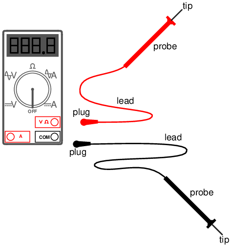
El cable de prueba negrosiempreSe conecta al enchufe negro del multímetro: el que está marcado como "COM" para "común". El cable de prueba rojo se conecta al enchufe rojo marcado para voltaje y resistencia, o al enchufe rojo marcado para corriente, dependiendo de la cantidad que desee medir con el multímetro.
Para ver cómo funciona esto, veamos un par de ejemplos que muestran el medidor en uso. Primero, configuraremos el medidor para medir el voltaje CC de una batería:
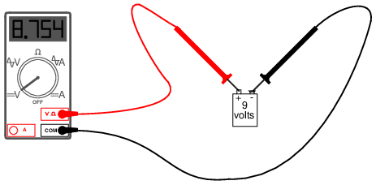
Tenga en cuenta que los dos cables de prueba están conectados a los enchufes apropiados del medidor para voltaje y que el interruptor selector se ha configurado para CC "V". Ahora, veremos un ejemplo del uso del multímetro para medir el voltaje de CA de un tomacorriente eléctrico doméstico (enchufe de pared):
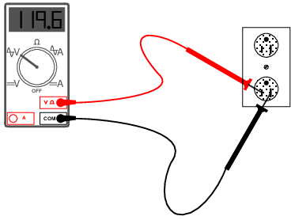
La única diferencia en la configuración del medidor es la ubicación del interruptor selector: ahora está en CA "V". Como todavía estamos midiendo voltaje, los cables de prueba permanecerán enchufados en los mismos enchufes. En ambos ejemplos, esimperativoque no permita que las puntas de las sondas entren en contacto entre sí mientras ambas estén en contacto con sus respectivos puntos del circuito. Si esto sucede, se formará un cortocircuito, creando una chispa y tal vez incluso una bola de fuego si la fuente de voltaje es capaz de suministrar suficiente corriente. La siguiente imagen ilustra el potencial de peligro:
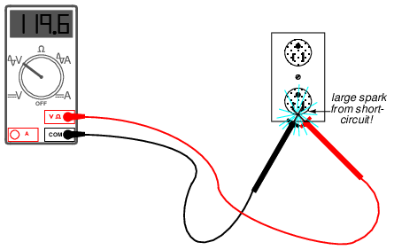
Esta es sólo una de las formas en que un medidor puede convertirse en una fuente de peligro si se usa incorrectamente.
La medición de voltaje es quizás la función más común para la que se utiliza un multímetro. Sin duda, es la medición principal que se toma por motivos de seguridad (parte del procedimiento de bloqueo/etiquetado) y el operador del medidor debe comprenderla bien. Siendo que el voltaje es siempre relativo entre dos puntos, el medidordebedebe estar firmemente conectado a dos puntos de un circuito antes de que proporcione una medición confiable. Por lo general, eso significa que ambas sondas deben agarrarse con las manos del usuario y sostenerse contra los puntos de contacto adecuados de una fuente o circuito de voltaje mientras se mide.
Debido a que la ruta de corriente de choque de mano a mano es la más peligrosa, sostener las sondas del medidor en dos puntos en un circuito de alto voltaje de esta manera siempre es una buena opción.potencialpeligro. Si el aislamiento protector de las sondas está desgastado o agrietado, es posible que los dedos del usuario entren en contacto con los conductores de las sondas durante el tiempo de prueba, provocando una fuerte descarga. Si es posible utilizar sólo una mano para agarrar las sondas, esa es una opción más segura. A veces es posible "fijar" la punta de una sonda en el punto de prueba del circuito para poder soltarla y colocar la otra sonda en su lugar, usando solo una mano. Se pueden conectar accesorios especiales para la punta de la sonda, como clips de resorte, para ayudar a facilitar esto.
Recuerde que los cables de prueba del medidor son parte del paquete completo del equipo y que deben tratarse con el mismo cuidado y respeto que el medidor en sí. Si necesita un accesorio especial para sus cables de prueba, como un clip de resorte u otra punta de sonda especial, consulte el catálogo de productos del fabricante del medidor u otro fabricante de equipos de prueba.NoIntente ser creativo y fabricar sus propias sondas de prueba, ya que puede terminar poniéndose en peligro la próxima vez que las utilice en un circuito con corriente.
Además, hay que recordar que los multímetros digitales suelen discriminar bien entre medidas de CA y CC, ya que se configuran para una u otra al comprobar la tensión o la corriente. Como hemos visto anteriormente, tanto los voltajes como las corrientes de CA y CC pueden ser mortales, por lo que cuando utilice un multímetro como dispositivo de verificación de seguridad, siempre debe verificar la presencia de CA y CC, ¡incluso si no espera encontrar ambos! Además, al verificar la presencia de voltaje peligroso, debe asegurarse de verificarallpares de puntos en cuestión.
Por ejemplo, suponga que abre un gabinete de cableado eléctrico y encuentra tres conductores grandes que suministran energía de CA a una carga. El disyuntor que alimenta estos cables (supuestamente) ha sido apagado, bloqueado y etiquetado. Verificó dos veces la ausencia de energía presionando el botónComenzarbotón para la carga. No pasó nada, así que ahora pasa a la tercera fase de su control de seguridad: la prueba de voltaje del medidor.
Primero, verifica su medidor con una fuente de voltaje conocida para ver que esté funcionando correctamente. Cualquier receptáculo de energía cercano debe proporcionar una fuente conveniente de voltaje de CA para una prueba. Lo haces y descubres que el medidor indica como debería. A continuación, debe verificar el voltaje entre estos tres cables en el gabinete. Pero el voltaje se mide entretwopuntos, entonces, ¿dónde verificas?
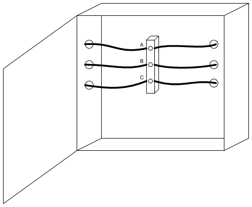
La respuesta es comprobar entre todas las combinaciones de esos tres puntos. Como puede ver, los puntos están etiquetados como "A", "B" y "C" en la ilustración, por lo que deberá tomar su multímetro (configurado en el modo voltímetro) y verificar entre los puntos A y B, B y C y A y C. Si encuentra voltaje entre cualquiera de esos pares, el circuito no está en un estado de energía cero. ¡Pero espera! Recuerde que un multímetro no registrará voltaje CC cuando esté en el modo de voltaje CA y viceversa, por lo que debe verificar esos tres pares de puntos encada modo¡Para completar un total de seis comprobaciones de voltaje!
Sin embargo, incluso con todas esas comprobaciones, todavía no hemos cubierto todas las posibilidades. Recuerde que puede aparecer voltaje peligroso entre un solo cable y tierra (en este caso, la estructura metálica del gabinete sería un buen punto de referencia a tierra) en un sistema de energía. Entonces, para estar perfectamente seguros, no solo tenemos que verificar entre A y B, B y C, y A y C (en los modos CA y CC), sino que también tenemos que verificar entre A y tierra, B y tierra, y C y tierra (tanto en modo CA como CC). Esto hace un total de doce comprobaciones de voltaje para este escenario aparentemente simple de sólo tres cables. Luego, por supuesto, después de haber completado todas estas comprobaciones, debemos tomar nuestro multímetro y volver a probarlo con una fuente de voltaje conocida, como un receptáculo de energía, para asegurarnos de que todavía esté en buen estado de funcionamiento.
Usar un multímetro para comprobar la resistencia es una tarea mucho más sencilla. Los cables de prueba se mantendrán enchufados en los mismos enchufes que para las comprobaciones de voltaje, pero será necesario girar el interruptor selector hasta que apunte al símbolo de resistencia en forma de "herradura". Al tocar las sondas a lo largo del dispositivo cuya resistencia se va a medir, el medidor debería mostrar correctamente la resistencia en ohmios:
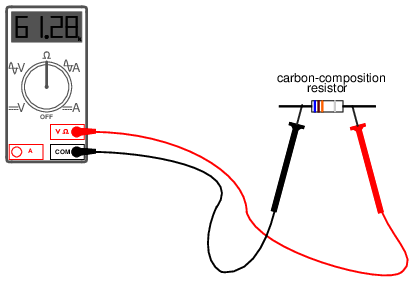
Una cosa muy importante para recordar acerca de medir la resistencia es que sólo debe hacerse endesenergizadocomponentes! Cuando el medidor está en modo de "resistencia", utiliza una pequeña batería interna para generar una pequeña corriente a través del componente que se va a medir. Al detectar lo difícil que es hacer pasar esta corriente a través del componente, se puede determinar y mostrar la resistencia de ese componente. Si hay alguna fuente adicional de voltaje en el bucle del medidor-cable-componente-cable-medidor para ayudar o oponerse a la corriente de medición de resistencia producida por el medidor, se producirán lecturas defectuosas. En el peor de los casos, el medidor podría incluso resultar dañado por la tensión externa.
El modo de "resistencia" de un multímetro es muy útil para determinar la continuidad del cable, así como para realizar mediciones precisas de resistencia. Cuando hay una conexión buena y sólida entre las puntas de las sondas (simulada al tocarlas), el medidor muestra casi cero Ω. Si los cables de prueba no tuvieran resistencia, se leería exactamente cero:
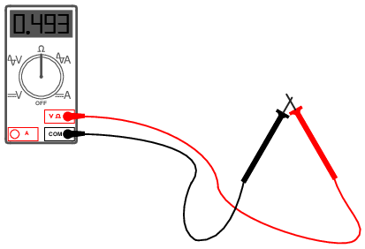
Si los cables no están en contacto entre sí, o tocan los extremos opuestos de un cable roto, el medidor indicará una resistencia infinita (generalmente mostrando líneas discontinuas o la abreviatura "O.L." que significa "bucle abierto"):
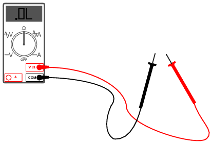
Con diferencia, la aplicación más peligrosa y compleja del multímetro es la medición de corriente. La razón de esto es bastante simple: para que el medidor mida la corriente, se debe forzar la corriente a medir.a través deel medidor. Esto significa que el medidor debe formar parte de la ruta actual del circuito en lugar de simplemente conectarse a un lado en algún lugar, como es el caso cuando se mide voltaje. Para que el medidor forme parte de la ruta actual del circuito, el circuito original debe "romperse" y el medidor debe conectarse a través de los dos puntos de la interrupción abierta. Para configurar el medidor para esto, el interruptor selector debe apuntar a CA o CC "A" y el cable de prueba rojo debe estar enchufado en el enchufe rojo marcado "A". La siguiente ilustración muestra un medidor listo para medir corriente y un circuito para probar:
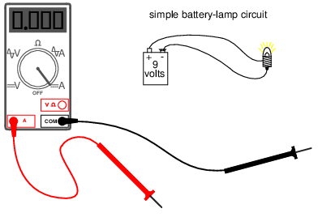
Ahora, el circuito se interrumpe en preparación para conectar el medidor:
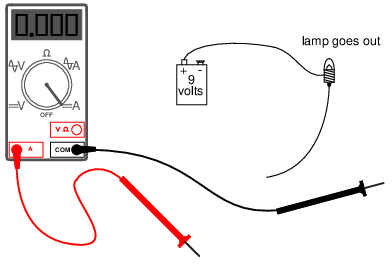
El siguiente paso es insertar el medidor en línea con el circuito conectando las dos puntas de las sondas a los extremos rotos del circuito, la sonda negra al terminal negativo (-) de la batería de 9 voltios y la sonda roja al extremo del cable suelto que conduce a la lámpara:
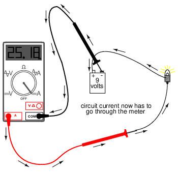
Este ejemplo muestra un circuito muy seguro para trabajar. 9 voltios difícilmente constituyen un riesgo de descarga eléctrica, por lo que hay poco que temer al abrir este circuito (¡con las manos desnudas, nada menos!) y conectar el medidor en línea con el flujo de electrones. Sin embargo, con circuitos de mayor potencia, esto podría ser una tarea realmente peligrosa. Incluso si el voltaje del circuito fuera bajo, la corriente normal podría ser lo suficientemente alta como para que se produjera una chispa perjudicial en el momento en que se estableciera la última conexión de la sonda del medidor.
Otro peligro potencial de usar un multímetro en su modo de medición de corriente ("amperímetro") es no volver a colocarlo correctamente en una configuración de medición de voltaje antes de medir el voltaje con él. Las razones de esto son específicas del diseño y operación del amperímetro. Al medir la corriente del circuito colocando el medidor directamente en el camino de la corriente, es mejor que el medidor ofrezca poca o ninguna resistencia contra el flujo de electrones. De lo contrario, cualquier resistencia adicional ofrecida por el medidor impediría el flujo de electrones y alteraría el funcionamiento del circuito. Por lo tanto, el multímetro está diseñado para tener prácticamente cero ohmios de resistencia entre las puntas de la sonda de prueba cuando la sonda roja se ha enchufado en el enchufe rojo "A" (medición de corriente). En el modo de medición de voltaje (cable rojo enchufado en el enchufe rojo "V"), hay muchos megaohmios de resistencia entre las puntas de las sondas de prueba, porque los voltímetros están diseñados para tener una resistencia casi infinita (de modo quenoextraer cualquier corriente apreciable del circuito bajo prueba).
Al cambiar un multímetro del modo de medición de corriente al modo de medición de voltaje, es fácil girar el interruptor selector de la posición "A" a la "V" y olvidarse de cambiar correspondientemente la posición del enchufe del cable de prueba rojo de "A" a "V". El resultado, si el medidor se conecta a través de una fuente de voltaje sustancial, ¡será un cortocircuito a través del medidor!
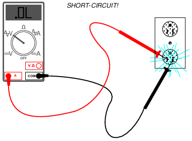
Para ayudar a prevenir esto, la mayoría de los multímetros tienen una función de advertencia mediante la cual emiten un pitido si alguna vez hay un cable enchufado en la toma "A" y el interruptor selector está en "V". Sin embargo, por más convenientes que sean características como estas, todavía no sustituyen el pensamiento claro y la precaución al usar un multímetro.
Todos los multímetros de buena calidad contienen fusibles en su interior que están diseñados para "quemarse" en caso de que pase una corriente excesiva a través de ellos, como en el caso ilustrado en la última imagen. Como todos los dispositivos de protección contra sobrecorriente, estos fusibles están diseñados principalmente paraproteger el equipo(en este caso, el propio medidor) contra daños excesivos, y sólo de manera secundaria para proteger al usuario contra daños. Se puede usar un multímetro para verificar su propio fusible actual colocando el interruptor selector en la posición de resistencia y creando una conexión entre los dos enchufes rojos como esta:
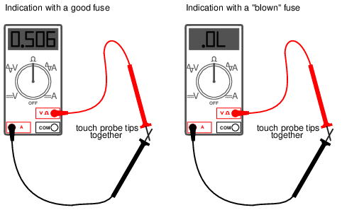
Un fusible en buen estado indicará muy poca resistencia, mientras que un fusible fundido siempre mostrará "O.L." (o cualquier indicación que utilice ese modelo de multímetro para indicar que no hay continuidad). El número real de ohmios mostrado para un fusible en buen estado tiene poca importancia, siempre que sea una cifra arbitrariamente baja.
Ahora que hemos visto cómo usar un multímetro para medir voltaje, resistencia y corriente, ¿qué más queda por saber? ¡Infinidad! El valor y las capacidades de este versátil instrumento de prueba se harán más evidentes a medida que adquiera habilidad y familiaridad con su uso. No hay sustituto para la práctica regular con instrumentos complejos como estos, así que siéntete libre de experimentar con circuitos seguros alimentados por baterías.
- REVISAR:
- Un medidor capaz de verificar voltaje, corriente y resistencia se llamamultímetro.
- Como el voltaje siempre es relativo entre dos puntos, se debe conectar un medidor de voltaje ("voltímetro") a dos puntos de un circuito para obtener una buena lectura. Tenga cuidado de no tocar las puntas desnudas de las sondas mientras mide el voltaje, ya que esto creará un cortocircuito.
- Recuerde verificar siempre el voltaje CA y CC cuando use un multímetro para verificar la presencia de voltaje peligroso en un circuito. ¡Asegúrese de verificar el voltaje entre todas las combinaciones de pares de conductores, incluso entre los conductores individuales y tierra!
- Cuando están en el modo de medición de voltaje ("voltímetro"), los multímetros tienen una resistencia muy alta entre sus cables.
- Nunca intente leer la resistencia o la continuidad con un multímetro en un circuito que esté energizado. En el mejor de los casos, las lecturas de resistencia que obtenga del medidor serán inexactas y, en el peor de los casos, el medidor podría dañarse y usted podría lesionarse.
- Los medidores de corriente ("amperímetros") siempre están conectados en un circuito, por lo que los electrones tienen que fluira través deel medidor.
- Cuando están en el modo de medición de corriente ("amperímetro"), los multímetros prácticamente no tienen resistencia entre sus cables. Esto tiene como objetivo permitir que los electrones fluyan a través del medidor con la menor dificultad posible. Si este no fuera el caso, el medidor agregaría resistencia adicional en el circuito, afectando así la corriente.
Electric shock data
La tabla de corrientes eléctricas y sus diversos efectos corporales se obtuvo de fuentes en línea (Internet): la página de seguridad del Instituto Tecnológico de Massachusetts (sitio web:[*]) y un manual de seguridad publicado por Cooper Bussmann, Inc (sitio web:[*]). En el manual de Bussmann, la tabla se titula apropiadamenteEfectos nocivos de la descarga eléctrica, y acreditado al Sr. Charles F. Dalziel. Investigaciones posteriores revelaron que Dalziel era a la vez un pionero científico y una autoridad en los efectos de la electricidad en el cuerpo humano.
La tabla que se encuentra en el manual de Bussmann difiere ligeramente de la disponible en el MIT: para el umbral de percepción de CC (hombres), la tabla del MIT da 5,2 mA mientras que la tabla de Bussmann da una cifra ligeramente mayor de 6,2 mA. Además, para el umbral de CA de 60 Hz "incapaz de soltar" (hombres), la tabla del MIT proporciona 20 mA, mientras que la tabla de Bussmann proporciona una cifra menor de 16 mA. Como todavía tengo que obtener una copia primaria de la investigación de Dalziel, las cifras citadas aquí son conservadoras: he enumerado los valores más bajos en mi tabla donde difieren las fuentes de datos.
Estas diferencias, por supuesto, son académicas. La cuestión aquí es que magnitudes relativamente pequeñas de corriente eléctrica a través del cuerpo pueden ser dañinas, si no letales.
Los datos sobre la resistencia eléctrica de los puntos de contacto corporal se tomaron de una página de seguridad (documento 16.1) del Laboratorio Nacional Lawrence Livermore (sitio web[*]), citando a Ralph H. Lee como fuente de datos. El trabajo de Lee se enumera aquí en un documento titulado "Hoja eléctrica humana", compuesto mientras era miembro del IEEE en E.I. duPont de Nemours & Co., y también en un artículo titulado "Seguridad eléctrica en plantas industriales" que apareció en la edición de junio de 1971 deEspectro IEEErevista.
Para los curiosos morbosos, la experimentación de Charles Dalziel realizada en la Universidad de California (Berkeley) comenzó con una subvención estatal para investigar los efectos corporales de la corriente eléctrica subletal. Su método de prueba fue el siguiente: se pidió a sujetos voluntarios, hombres y mujeres sanos, que sostuvieran un alambre de cobre en una mano y colocaran la otra mano sobre una placa redonda de latón. Luego se aplicó un voltaje entre el cable y la placa, lo que provocó que los electrones fluyeran a través de los brazos y el pecho del sujeto. La corriente se detuvo y luego se reanudó a un nivel superior. El objetivo aquí era ver cuánta corriente podía tolerar el sujeto y aún así mantener su mano presionada contra la placa de latón. Cuando se alcanzó este umbral, los asistentes de laboratorio mantuvieron con fuerza la mano del sujeto en contacto con la placa y la corriente se incrementó nuevamente. Se pidió al sujeto que soltara el cable que sostenía, para ver a qué nivel de corriente la contracción muscular involuntaria (tétanos) le impedía hacerlo. Para cada sujeto, el experimento se realizó utilizando CC y también CA a varias frecuencias. Se probaron más de dos docenas de voluntarios humanos y posteriormente se realizaron estudios sobre la fibrilación cardíaca con sujetos animales.
Contributors
Los contribuyentes a este capítulo se enumeran en orden cronológico de sus contribuciones, desde el más reciente hasta el primero. Consulte el Apéndice 2 (Lista de colaboradores) para fechas e información de contacto.
Jason Stark(Junio de 2000): Formato de documentos HTML, que dio lugar a una segunda edición mucho más atractiva.
Bibliography
- [MMOM]Robert S. Porter, MD, editor, “The Merck Manuals Online Medical Library”, “Electrical Injuries,” at http://www.merck.com/mmpe/sec21/ch316/ch316b.html
Lecciones en circuitos eléctricoscopyright (C) 2000-2023 Tony R. Kuphaldt, según los términos y condiciones delCC BY License.